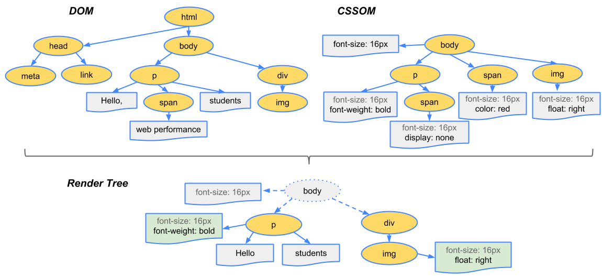

This is the view of the page for someone who has never been to the site before (or has cleared their cache since their last visit)
Repeat view
This is the view of a page if a user goes only to the page, closes their browser, and then reopens the browser and goes only to that page again as the first page they hit on the site.
Flow view
This is the view of the page when a customer has previously visited at least one other page on the site.
Critical Rendering Path
It is lot's of work for a browser to deliver a fast experience
Optimising for performance we need to understanding what happens in when a browser when it receives the HTML, CSS, and JavaScript and renders them into pixels this is known as the critical rendering path
Constructing the Object Model
HTML markup is transformed into a Document Object Model (DOM)
CSS markup is transformed into a CSS Object Model (CSSOM)
Render-tree construction, Layout, and Paint

What about JavaScript?
Where JavaScript is placed within a document is important
JavaScript can modify the DOM and CSSOM
JavaScript execution is delayed until the CSSOM is ready
JavaScript blocks DOM construction unless explicitly declared as async
Now is the W3C HTML specification, Firefox 33+ and Chrome 38+ support the picture element. This is the future of responsive images.
will-change property
Hardware Acceleration - when certain operations such as 3D transforms are performed on an element on a page, that element is moved to its own layer. This allows it to render independently from the rest of the page and can be drawn on later.
Moving an element to a new layer is an expensive operation which can delay the start of a transform animation by a noticeable fraction of a second.
will-change: transform;
Summary
Validate with PageSpeed Insights and WebPageTest
Test on a slow connection
Understand the critical rendering path
Only animate opacity and transform, avoid painting and layout changes